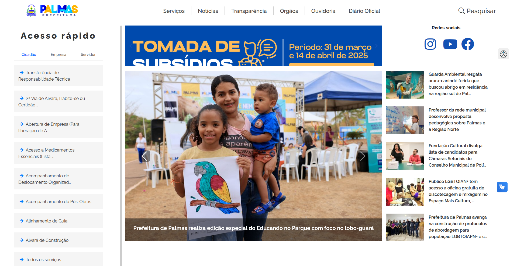

Prefeitura de Palmas¶
Bem-vindo à documentação do Portal da Prefeitura¶
Este guia foi desenvolvido para orientar servidores, colaboradores e cidadãos no uso correto e eficiente dos serviços digitais oferecidos pelo Portal da Prefeitura de Palmas, Tocantins. 
{kind=link}
Aqui você encontrará instruções passo a passo para acessar funcionalidades, preencher formulários, consultar informações públicas, utilizar sistemas internos e compreender os fluxos administrativos disponíveis na plataforma.
A documentação está dividida por temas e áreas de atuação, facilitando a navegação e o entendimento de cada recurso. O objetivo é garantir autonomia, transparência e agilidade no uso dos serviços públicos digitais.
Explore os tópicos ao lado, siga os tutoriais e aproveite ao máximo as ferramentas que o Portal oferece para modernizar a gestão e aproximar o cidadão da administração municipal.
Objetivo¶
O Portal da Prefeitura foi criado para facilitar o acesso da população aos serviços públicos, promovendo transparência, agilidade e inclusão digital. A arquitetura do projeto permite que diferentes perfis de usuários — como cidadãos, empresas e servidores — tenham acesso rápido às funcionalidades mais relevantes.
Estrutura do Projeto O projeto segue a estrutura padrão gerada pelo AgtecCore, com as seguintes características:
Serviços¶
O Portal da Prefeitura de Palmas oferece uma área dedicada à consulta e utilização de serviços públicos digitais. A interface foi projetada para facilitar o acesso, permitindo que o usuário encontre rapidamente o que precisa por meio de filtros e categorias específicas.
{kind=link}
Como utilizar Na seção Serviços, você encontrará:
Barra de pesquisa: digite palavras-chave como “IPTU”, “certidão”, “alvará” ou “atendimento” para localizar o serviço desejado.
Categorias de acesso rápido:
{kind=link}
Todos: exibe a lista completa de serviços disponíveis no portal.
Cidadão: reúne serviços voltados à população em geral, como emissão de documentos, agendamentos e consultas.
Empresas: concentra serviços voltados a empreendedores e instituições, como licenciamento, certidões e protocolos.
Servidores: apresenta funcionalidades internas para colaboradores da administração pública, como acesso ao contracheque, ponto eletrônico e sistemas administrativos.
Cada serviço possui uma página própria com instruções detalhadas, documentos necessários e links diretos para execução ou solicitação.
Notícias¶
A seção de Notícias reúne atualizações importantes sobre o funcionamento dos serviços públicos, mudanças administrativas, eventos institucionais e melhorias implementadas no Portal da Prefeitura de Palmas – TO.
Aqui você encontrará:
Comunicados técnicos sobre atualizações no sistema, novas funcionalidades e manutenções programadas.
Informações institucionais como nomeações, parcerias, campanhas públicas e ações da gestão municipal.
Eventos e capacitações voltados para servidores, cidadãos e empresas que utilizam os serviços digitais do portal.
Boletins de transparência, com dados sobre desempenho, acessos e evolução dos serviços.
Essa área é atualizada regularmente e serve como ponto de referência para quem deseja acompanhar as novidades e entender como o portal está sendo aprimorado para melhor atender à população.
Órgãos¶
A administração pública municipal é composta por diversos órgãos que atuam de forma integrada para garantir o funcionamento eficiente dos serviços oferecidos à população. Cada órgão possui atribuições específicas, alinhadas às políticas públicas e às necessidades da cidade.
Entre os principais órgãos estão:
Secretarias Municipais, responsáveis pela formulação, execução e acompanhamento de políticas nas áreas de saúde, educação, infraestrutura, assistência social, cultura, esporte, meio ambiente, entre outras.
Autarquias e Fundações, que desempenham funções técnicas e operacionais, como o gerenciamento de serviços públicos essenciais e programas estratégicos.
Órgãos de Controle e Planejamento, como a Controladoria-Geral e a Secretaria de Planejamento, que asseguram a transparência, a eficiência e o cumprimento das metas governamentais.
Instituições de apoio à inovação e tecnologia, voltadas à modernização da gestão e à promoção de soluções digitais para os serviços públicos.
Essa estrutura organizacional visa promover uma gestão pública eficiente, transparente e voltada para o desenvolvimento sustentável da cidade, garantindo que cada cidadão tenha acesso a serviços de qualidade e políticas inclusivas.
Transparências¶
A transparência é um dos pilares fundamentais da gestão pública moderna. No projeto ASTEC Core, esse princípio é aplicado de forma ativa e contínua, garantindo que todas as ações, decisões e investimentos estejam acessíveis à sociedade de forma clara, objetiva e verificável.
Nosso compromisso com a transparência envolve:
Acesso à informação: disponibilizamos dados relevantes sobre processos, contratos, despesas, indicadores e resultados por meio de plataformas abertas e atualizadas.
Prestação de contas: mantemos registros públicos sobre metas, cronogramas, entregas e relatórios de desempenho, permitindo o acompanhamento por cidadãos, órgãos de controle e parceiros institucionais.
Governança ética: adotamos práticas que promovem integridade, imparcialidade e responsabilidade na condução das atividades administrativas e técnicas.
Participação social: incentivamos o diálogo com a comunidade, promovendo canais de escuta e colaboração para aprimorar os serviços e políticas públicas.
Acreditamos que a transparência fortalece a confiança, melhora a eficiência dos serviços e contribui para uma gestão mais justa e democrática.
Ouvidora¶
A Ouvidoria é o canal oficial de comunicação entre o cidadão e a administração pública. Seu objetivo é garantir que toda pessoa tenha o direito de se manifestar sobre os serviços prestados, sugerir melhorias, registrar elogios, fazer denúncias ou apresentar reclamações de forma segura, transparente e acessível.
Por meio da Ouvidoria, buscamos:
Fortalecer o diálogo com a sociedade, promovendo escuta ativa e respeito às opiniões dos usuários.
Aprimorar os serviços públicos, utilizando as manifestações como fonte de diagnóstico e melhoria contínua.
Assegurar transparência e responsabilidade, garantindo que todas as demandas sejam tratadas com imparcialidade e dentro dos prazos estabelecidos.
Proteger os direitos do cidadão, oferecendo um espaço ético e acolhedor para o exercício da cidadania.
As manifestações podem ser feitas de forma presencial, por telefone, e-mail ou por meio de plataformas digitais integradas ao Portal. Todas as solicitações são registradas, analisadas e respondidas com base em critérios técnicos e legais.
A Ouvidoria é um instrumento essencial para o fortalecimento da gestão democrática e para a construção de uma administração pública mais justa, eficiente e participativa.
Diário Oficial¶
O Diário Oficial é o veículo oficial de comunicação da administração pública, utilizado para divulgar atos normativos, administrativos e legais que impactam diretamente a gestão e os cidadãos. Ele garante a publicidade, a transparência e a validade jurídica das decisões tomadas pelos órgãos públicos.
Por meio do Diário Oficial, são publicados:
Leis, decretos e portarias aprovados pelo poder público municipal.
Editais de licitação, concursos e contratações, assegurando igualdade de acesso e oportunidade.
Nomeações, exonerações e movimentações de servidores, conforme os princípios da legalidade e da impessoalidade.
Convênios, contratos e termos de cooperação, permitindo o acompanhamento por órgãos de controle e pela sociedade.
Avisos e comunicados oficiais, que orientam a população sobre serviços, prazos e procedimentos.
A consulta ao Diário Oficial é livre e pode ser feita por qualquer cidadão, garantindo o direito à informação e o controle social sobre os atos da administração. Ele é atualizado regularmente e está disponível em formato digital por meio do Portal da Prefeitura.
AGTEC¶
Este projeto é um sistema web desenvolvido com Django + AgtecCore, voltado para atender às demandas digitais de uma prefeitura municipal. Ele oferece uma estrutura escalável e segura para disponibilizar serviços públicos online, como emissão de documentos, acompanhamento de processos, notícias institucionais e integração com sistemas internos.
Lembre-se de sempre consultar esta documentação para a utilização da ferramenta do Portal.
=== “Linux” Instruções para Linux aqui.
=== “Windows” Instruções para Windows aqui.